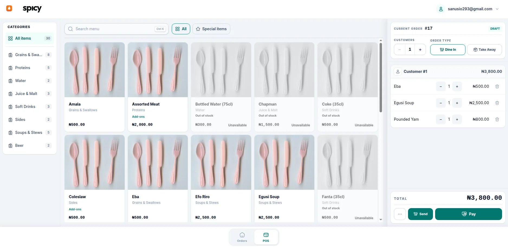

Owners
See the day clearly. Sales, cost, and profit, with food and drinks apart, without rebuilding it in a spreadsheet.
Everything your restaurant needs to run better
Ordering, inventory, kitchen operations, payments, reporting, and full accounting — built for restaurants that need more than just a POS.

Why Spicy
Restaurant POS for orders, payments, and shift workflows
Full accounting with financial records, and business reporting
Reporting & insights to understand sales, profitability, and performance
Back-office for inventory, procurement, and restaurant configs
Platform
Dine-in and take-away, guests on a single order, and payment across cash and transfer. Every order has an owner, a history, and a clean path when something comes back.
Food and drinks leave on separate tickets, grouped the way the order was taken. Cancellations stay visible, and a paid order does not skip the station.
Store, kitchen, and bar in one picture. Receipts, transfers, kitchen use, and waste carry their cost, and recipes show what the food should have used.
| Movement | Qty | Value |
|---|---|---|
| Received | +10 bags | ₦ 268,000 |
| To the kitchen | −2 bags | −₦ 53,600 |
| On hand | 8 bags | ₦ 214,400 |
Valued at the current average cost
One shift open at a time. Counted cash against what the system expected, with refunds and cash taken out already in the figure. The difference posts with the close.
| Mode | Expected | Counted | Diff |
|---|---|---|---|
| Cash | ₦ 84,500 | ₦ 84,500 | ₦ 0 |
| Transfer | ₦ 132,000 | ₦ 130,000 | −₦ 2,000 |
| Total | ₦ 216,500 | ₦ 214,500 | −₦ 2,000 |
Refunds and cash-outs already included
Sales by day, item, cashier, and time of day. A daily profit and loss with food and drinks in their own columns: food cost from the kitchen, drink cost from what sold.
| Line | Food | Drinks | Total |
|---|---|---|---|
| Sales | ₦ 96,000 | ₦ 41,500 | ₦ 137,500 |
| Cost | ₦ 33,400 | ₦ 12,900 | ₦ 46,300 |
| Gross profit | ₦ 62,600 | ₦ 28,600 | ₦ 91,200 |
| Net profit | — | — | ₦ 54,800 |
Food from the kitchen · drinks from sales
Income split between food and drinks, each payment type on its own account, drink cost when the sale lands, and supplier bills from receipt through to payment.
Sales at the counter
recorded in
The accounts
For whom
See the day clearly. Sales, cost, and profit, with food and drinks apart, without rebuilding it in a spreadsheet.
Service, stock, and the drawer in one place. Closes, counts, waste, and refunds carry a name and a time.
The order, the guests, and the payment on one screen. Split tender and change, without leaving the sale.
Purchasing, stock value, and what you owe suppliers, on the same records as the till.
Getting started
Menu, payments, and the kitchen and bar. The floor can sell.
Items, recipes, and the store, kitchen, and bar. Cost has somewhere to live.
Opening cash, the day's sales, and a drawer counted against the system.
Daily profit for food and drinks, and accounts that already match the till.
Free and open source. Run Spicy locally or in the cloud. Your data, your code, your control.
View on GitHubReady to start
Spicy gives the counter, the kitchen and the bar, the stock, and the books one connected system.
Thanks for reaching out. We will get back to you at shortly.
Partner with us
Tell us a little about your restaurant and we will come back to you shortly.